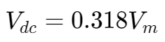
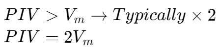
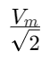

整流器 | Rectifier
定义
整流器是一种用于将交流电转换成直流电的电子元件。
A rectifier is an electrical device that converts alternating current (AC), which periodically reverses direction, to direct current (DC), which flows in only one direction.
-- Wikipedia
半波整流 | Half-Wave Rectifier
对于一个正弦波，如下图所示：

在一个半波整流电路中，随着输入电压变化，输出电压会发生如下所示的变化：


对于一个交流电源输入，经过一个半波整流器，对于其输出的直流电有：

Notes
- A real diode does not start conducting until forward signal exceeds VD ≈ 0.7 V
- In reverse direction there is a very small leakage current
- The peak output voltage: Vp = Vm - 0.7
- The average output voltage is a small positive value: Vd = Vout, avg = 0.318 Vp
对于公式中的一些记号：
- Vm = Vmax: maximum voltage from the transformer
- Vp = Vpeek: peak voltage applied to the load
峰值逆电压 | Peak Inverse Voltage
最大的可施加在稳流器上而不使其损坏的反向电压。
The maximum reverse-bias voltage that can be applied before entering the breakdown region is called: the peak inverse voltage (referred to simply as the PIV rating), or the peak reverse voltage (denoted the PRV rating).

笔记
理论上 PIV 的值可以为任何大于 Vm 的值，但为了安全起见，一些时候会取 Vm 的倍数，如两倍。
RMS 等效电压 | RMS Voltage equivalent
正弦波形的 RMS 等效电压等同于 。
全波整流 | Full-Wave Rectification
全波整流示例电路


笔记
- In reverse direction there is a very small leakage current
- Because of centre-tap, RMS voltage for each half section = VRMS / 2
- For peak output voltage, only one diode conducts at a time, so still have Vp = Vm - 0.7 (same as half-wave)
- However, now we have twice the average output voltage Vout, avg = 0.636 V
- Still have to specify PIV rating
- PIV > 2 Vm − 0.7 V, usually select double this value
桥式整流器 | Bridge Rectifier

笔记
- In reverse direction, there is still a very small leakage current
- For peak output voltage, two diodes conduct at a time so Vp = Vm − 1.4
- The same average output voltage as two-diode rectifier, Vdc = 0.636 Vp
- Have to specify PIV rating, but with no centre-tap, it is the same as for half-wave rectifier: PIV > Vm − 0.7, usually allow a factor of 2
整流器总结
| 整流器类型 | 理想 V,,dc,, | 实际 V,,dc,, | PIV |
|---|---|---|---|
| 半波整流器 | Vdc = 0.318 Vm | Vdc = 0.318 (Vm - 0.7) | ~ 2 * Vm |
| 中心抽头整流器 | Vdc = 0.636 Vm | Vdc = 0.636 (Vm - 0.7) | ~ 2 * (2 Vm - 0.7) |
| 桥式整流器 | Vdc = 0.636 Vm | Vdc = 0.636 (Vm - 1.4) | ~ 2 * (Vm - 0.7) |